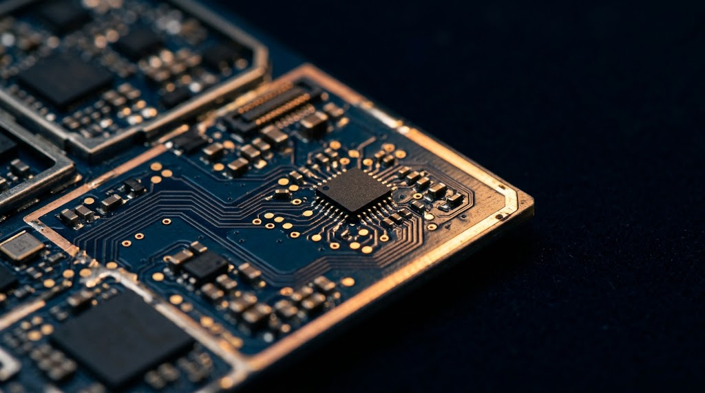

無線通訊與 IoT
BU1 / 業一處蜂巢式與短距無線模組、天線與高速光通訊介面。從工業 IoT、車聯網到邊緣運算，協助客戶在功耗、認證與成本之間取得平衡。
Telit
EverProX（原 Silicon Line）
- 應用
- 工業 IoT、車聯網、邊緣運算、醫療與遠距設備
- 支援
- 模組選型、天線匹配、認證文件、Linux／驅動除錯
- 採購重點
- 區域頻段與電信商認證、長期供貨承諾
- 專案型態
- 設計導入（Design-in）與樣品支援